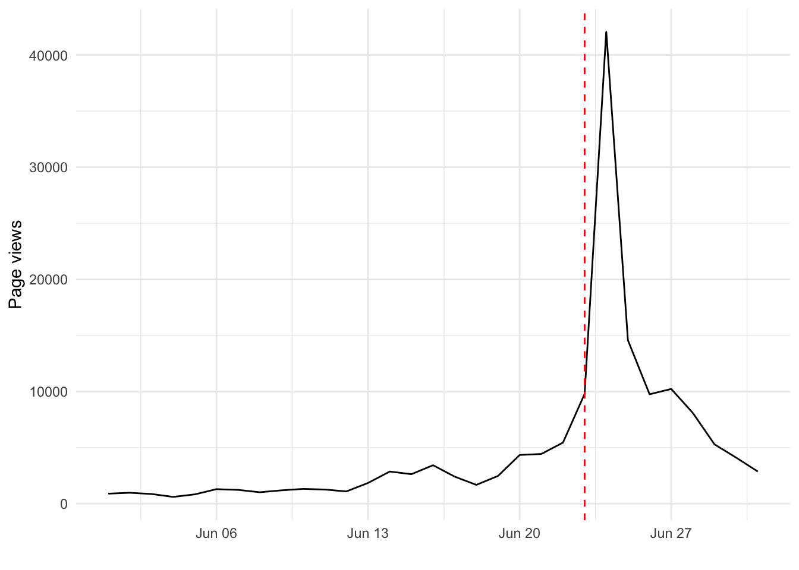

Chapter 6 Create data
In this chapter we will introduce different ways to create your own data. Specifically, we will show how to create data from existing files, how to scrape tables from webpages and how to get data from Twitter.
6.1 Create data from files
You will often encounter that the data of interest is not available in a format or structure that you will need for your analysis. Accordingly, as a first step, you will need to collect multiple files and turn them into a single dataset.
Here, we will use the example of election results from the Electoral Calculus. The example is from Matt Riggott (see the script here) and shows how we can download multiple files and connect them into a single dataset. Each file we will work with contains the election results from general elections in the UK.
As always, the first thing we will do is to load the tidyverse package.
library("tidyverse")Next, to get a sense of the data we will be looking at, go to your browser (e.g. Google Chrome or Safari) and open this link: https://www.electoralcalculus.co.uk/electdata_1955.txt
In this file, you will see multiple lines. These are the election results from 1955 (as indicated by the filename, electdata_1955.txt. The first line in the file is: Name;MP;Area;County;Electorate;CON;LAB;LIB;NAT;MIN;OTH. These are the variable names and are separated by ;. By using the function read_delim() from the tidyverse package, we can load this file into R as a data frame. Notice that we specify that ; is used to separate fields. We save the file in the object el_1955.
el_1955 <- read_delim(
"https://www.electoralcalculus.co.uk/electdata_1955.txt",
delim = ";"
)To inspect the data, we can use the function head() (output not shown).
head(el_1955)The above output shows that the data is loaded succesfully and saved in a data frame. We could do this for all elections manually, but that would take a lot of time and increase the odds of making mistakes. Instead, we will create a function that downloads all files. First, we specify the elections we are interested in (from 1955 to 2017) and save this information in the object election_years.
election_years <- c("1955", "1959", "1964", "1966", "1970", "1974feb",
"1974oct", "1979", "1983", "1987", "1992ob", "1997",
"2001ob", "2005ob", "2010", "2015", "2017")Second, we use read_delim() again, but as part as a function where we use the read_delim() on the year we specify. We call this function read_election_data().
read_election_data <- function(election) {
url <- paste0("http://www.electoralcalculus.co.uk/electdata_",
election, ".txt")
read_delim(url, delim = ";") %>%
mutate(year = election)
}With this function, we can specify any election year and get the data, e.g. read_election_data(2017) to get the data from 2017. Here, we use lapply() to run the function on all the election years mentioned in the object election_years above. To connect all elections, we use the function bind_rows(). We save the output in the object elections.
elections <- bind_rows(lapply(election_years, read_election_data))To see whether it has worked, use head() on the object (output not shown).
head(elections)6.2 Scrape data from tables
To scrape data from tables online, we use the rvest package. Remember to install it if you haven’t already done so.
library("rvest")In the example below, we will show how to easily scrape a table from a Wikipedia page. The first thing we do is to specify the link to the Wikipedia page and save it in the object url. In the example we will be looking at the election results from the 2014 European Parliament election in the United Kingdom.
url <- c(
"https://en.wikipedia.org/wiki/2014_European_Parliament_election_in_the_United_Kingdom"
)Next, we use the read_html() function to save the content on the Wikipedia page. We save the data in the object wikipage
wikipage <- read_html(url)We can use the function class() to see what type of content we have in the object.
class(wikipage)Here, we see that we have an xml_document and xml_node in our object. We want to save the tables in our data. To do this, we use the function html_nodes().
data_table <- html_nodes(wikipage, "table")If you type data_table, you can see an overview of all the tables we have saved. Here, we would like to use the data on the number of votes the different parties got in the 2014 European Parliament election in the United Kingdom. The table is depicted in Figure 6.1.

Figure 6.1: The Wikipedia table with hte 2014 EP election in the UK
In the figure, the title of the table is highlighted. If you copy the title and look up the source code of the page9, you can search for the table in the source code. This will show you what the code looks like for the table. To see the code for all our tables, we can simply call data_table.
data_tableWe can see that this table is number 15 in our object. We can use html_table() function to get the tables and then use the function pluck() (from the purrr package) to pick the table we would like, i.e. table number 15. We use the option fill=TRUE in html_table() as there are empty cells in the table. We save the table in the object ep14_raw.
ep14_raw <- data_table %>%
html_table(fill=TRUE) %>%
purrr::pluck(15)To ensure that it is a data frame we are working with, we can use the function class() again.
class(ep14_raw)We call the object ep14_raw as it is a raw table that needs further changes before we are satisfied. To get a sense of one of the issues with the data frame, we look at the last observations in the data frame with tail() (output not shown).
tail(ep14_raw)Here we see that the last three rows are aggregated numbers unrelated to the votes for the individual parties. Accordingly, we would like to remove these observations. To remove the specific rows, we save the object without observations 32, 33 and 34.
ep14_raw <- ep14_raw[-c(32:34), ]Next, we use head() to see what our data frame looks like for the first observations (output not shown).
head(ep14_raw)We see two main issues. First, that the variable names are not unique and will need to be changed. We are interested in four of the variables, namely the name of the party, the number of votes, the vote share and the number of seats. We give the relevant variables names and give the other variables unimportant names (as we are going to ignore those).
names(ep14_raw) <- c("V1", "party", "votes", "share", "V5",
"seats", "V7", "V8", "V9", "V10")Next, we can see that the first row is not an observation but variable names as well. Accordingly, we need to remove this observation as well.
ep14_raw <- ep14_raw[-c(1), ]To remove the irrelevant variables in our data frame, we use the select() function to select the relevant variables.
ep14_raw <- ep14_raw %>%
select(party, votes, share, seats)The last thing to do is to tell R that three variables, votes, share and seats are numeric. Notice how we use the function parse_number() to get rid of commas in the votes variable. We save this data frame in the object ep14.
ep14 <- ep14_raw %>%
mutate(
votes = parse_number(votes),
share = as.numeric(share),
seats = as.numeric(seats)
)Inspect the final data frame. In this case, we do not have a lot of observations and we simply show them all.
ep14Last, we create a figure showing the vote share and seats for the parties (notice that you will also need the package ggrepel to create the figure). (Output not shown)
ggplot(ep14, aes(x = share, y = seats)) +
geom_point() +
theme_minimal() +
ggrepel::geom_text_repel(
aes(label = ifelse(share > 15, party, NA)),
size = 4.5,
point.padding = .2,
box.padding = .4
) +
labs(
y = "Number of seats",
x = "Vote share",
title = "2014 European Parliament election, United Kingdom"
)6.3 Scrape political speeches
A lot of the text we can scrape online is not in the form of spreadsheets but in the form of nothing but text. To show how to scrape such text, we will focus on British political speeches from http://www.britishpoliticalspeech.org/speech-archive.htm.
Specifically, we will select the speech the Leader’s speech by Theresa May in Manchester from 2017. First, as in the previous example, we specify the url of the page we would like to scrape. In this speech, Theresa May is talking extensively about the British Dream.
url <- c(
"http://www.britishpoliticalspeech.org/speech-archive.htm?speech=367"
)To get the content of the page with the speech, we save the content of the page in the object speechpage.
speechpage <- read_html(url)Next, to select the actual part of the page containing the speech, we select the content within the <p></p> tags.
data_speech <- html_nodes(speechpage, "p")To get the actual text, we use the function html_text().
data_speech_text <- html_text(data_speech)Now we have all the text we need to use. However, to create a dataset with the words in the speech, we will use some functions from the package tidytext (as always, remember to install the package if you do not already have it installed) (Silge & Robinson, 2016).
library("tidytext")The first function we are going to use is not part of the package but will be used to convert our speech into a data frame using the tibble() function.
data_speech_df <- tibble(text = data_speech_text)While in a data frame, it is still just a lot of sentences on different rows. To unnest all the sentences in our text column into a word column, we use the function unnest_tokens().
words <- data_speech_df %>% unnest_tokens(word, text)This gives us an object, words, with 7,116 observations. However, a lot of these words are irrelevant stop words (most common words that we are not interested in such as the, is, at, which) that we would like to remove. We use the anti_join() function to remove all stop words.
words <- words %>% anti_join(stop_words, by = "word")Last, we can count the words in the speech and calculate the number of occurrences.
words %>% count(word, sort = TRUE)We see that people is mentioned 49 times, and britain is mentioned 36 times. dream and british are mentioned 33 and 29 times, respectively.
6.4 Get data from Twitter
To get data from Twitter, we are going to use the rtweet package (Kearney, 2018). The first thing we do is to load the package (remember to install if if you have not already done so). You can find more information about the package here: https://rtweet.info/
library("rtweet")Next, to make sure you can collect data, you need to have a Twitter user. You can register for free at https://twitter.com/. You will need this in order to use the rstats2twitter app. Last, make sure to install the httpuv package as well.
library("httpuv")Noteworthy, we cannot just collect data without any limits. In most cases, we have a liit of 18,000 observations per 15 minutes.
6.4.1 Data on Twitter user
To get data on a Twitter user, we can use different functions. There is a distinction betweeen friends and followers. The accounts a user follows are called friends, whereas followers are the accounts that follow a user. Here, we will use the get_friends() function to get information on the people Donald Trump is following.
trump_following <- get_friends("realDonaldTrump")When we do that, all we get is a series of user IDs for the people Donald Trump is following. We can use the lookup_users() function toget more information about the individual accounts.
trump_following <- lookup_users(trump_following$user_id)This gives us a lot more information on the individual users, including their Twitter handle, name and description. To see all the information saved, you can use the names() function.
names(trump_following)To save information on the user ID, the handle, name and the description, we create a new object called trump_data just with these variables.
trump_data <- trump_following %>%
select(user_id, screen_name, name, description) You can use head(trump_data) to see what the data looks like. To get information on the followers of Donald Trump, you can use the get_followers() function. However, this will take a lot of time to get (we are talking days!).
To get the most recent tweets from, Donald Trump, we can use the get_timeline() function.
trump_tweets <- get_timeline("realDonaldTrump", n = 100)To search for tweets from specific users, we can use the search_users() function. Below, we search for tweets from users with politics (via Twitters search query).
politics_users <- search_users("politics", n = 50)Next, we can use the get_favorites() function to get data on the tweets a user has favorited. Here, we save the favorites from Boris Johnson and save it in the object tweets_bj.
tweets_bj <- get_favorites("BorisJohnson")To get a sense of what this data looks like, you can use the head() function.
head(tweets_bj)6.4.2 Data on trends
To get data on what is trending in a certain part of the world, we can use the get_trends() function. Below, we get the 50 most trending topics in the United Kingdom. On October 29, 2018, #NationalCatDay and Angela Merkel are both trending (not for the same reason though).
trends_uk <- get_trends("united kingdom")6.4.3 Data on tweets
Last, to get data on specific tweets, we first use the search_tweets() function. Below, we get the most recent 100 tweets mentioning brexit. We also specify that we are not interested in retweets.
brexit <- search_tweets(
"brexit", n = 100, include_rts = FALSE
)This gives us a data frame with 100 observations and 88 variables. You can use the names() function to get a list of all variables in the data frame.
You can also use the search operators provided by Twitter, e.g. by filtering only tweets linking to news articles.
news <- search_tweets("filter:news", n = 100)We acn combine the two searches above and only search for tweets with Brexit related news.
brexit_news <- search_tweets("brexit filter:news", n = 100, include_rts = FALSE)If we want to only include tweets with a video, we can use "filter:video":
videos <- search_tweets("filter:video", n = 100, include_rts = FALSE)To look up data on a specific tweet, use the function lookup_tweets(). You can find the id on a tweet by looking in the url for a tweet (or in the variable status_id).
lookup_tweets("1065623990746710022")6.5 Get data from Wikipedia
As illustrated above, we can scrape tables from Wikipedia with the rvest package. However, we can also get more specific data on specific Wikipedia pages. To do this, we will use the package pageviews (Keyes & Lewis, 2016).
library("pageviews")This package has a function called article_pageviews() that allows us to specify an article and the period for which we would like to get data on how many page views that article got. In the code below, we specify that we would like to get the number of page views on the article “Brexit” from June 1 to July 1 in 2016.
# Get pageviews
brexit_views <- article_pageviews(project = "en.wikipedia",
article = "Brexit",
user_type = "user",
start = "2016060100",
end = "2016070100")To see what the data looks like, use head(). Here we see that there was 896 page views on June 1 in 2016.
head(brexit_views)## project language article access agent granularity date views
## 1 wikipedia en Brexit all-access user daily 2016-06-01 896
## 2 wikipedia en Brexit all-access user daily 2016-06-02 975
## 3 wikipedia en Brexit all-access user daily 2016-06-03 865
## 4 wikipedia en Brexit all-access user daily 2016-06-04 607
## 5 wikipedia en Brexit all-access user daily 2016-06-05 833
## 6 wikipedia en Brexit all-access user daily 2016-06-06 1297Again, we can use the ggplot2 package to show the trends over time (return to the code below once you have read the chapters on data visualisation).
ggplot(brexit_views, aes(x = as.Date(date), y = views)) +
geom_line() +
geom_vline(xintercept = as.Date("2016-06-23"),
colour = "red",
linetype = "dashed") +
theme_minimal() +
labs(y = "Page views",
x = "")
If you are interested in learning more on how to work with Wikipedia, we recommend the following tutorial: Studying Politics on and with Wikipedia.
To look up the source in Google Chrome, simply right click anywhere on the webpage and select
View Page Source. If in doubt on how to find the source code, you can google the name of your browser and “view souce code.”↩︎